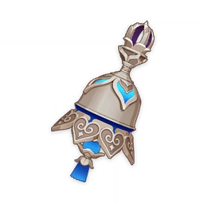

BEST ARTIFACT SET:
DESERT
PAVILION
SIGNATURE WEAPON

TULAYTULLAH'S
REMEMBRANCE
NAME: WANDERER
RARITY: 5 STAR
VISION: ANEMO

The Wanderer came into existence in place of
his previous incarnation after the
latter
expunged his previous appellations and their
respective histories from Irminsul.
Harboring his former self's memories after willingly
regaining them, "Wanderer" is now
the only title
he goes by, for he has no home, kin,
or destination.